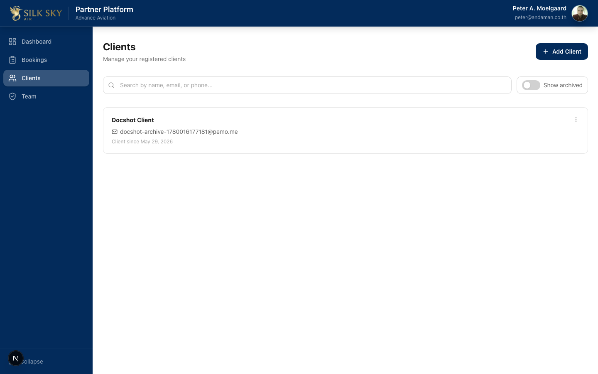
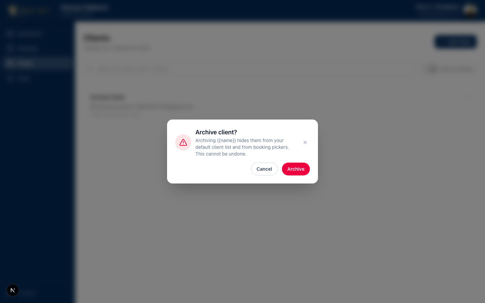
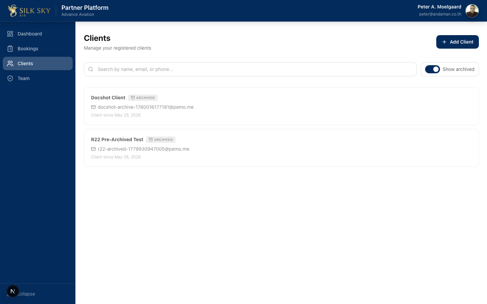

Archive a Client (Partner Portal)
App: Partner Portal Who uses it: Partner staff with the
module:partner-members:accessprivilege, managing their organization's client list. What it does: Lets partner staff archive a client from the Clients list — a one-way, soft action that hides the client from the default view without deleting any data. Archived clients stay queryable via a Show archived toggle and are clearly badged.
Before you start
- Local URL:
http://localhost:3050/members(the page is titled Clients — the URL stays/members). Staging / production: the same path onstaging.partner.silkskyair.com/partner.silkskyair.com. - Account: Sign in with a Partner Portal account that can manage clients (e.g.
peter@andaman.co.thfor Advance Aviation on local). - Prerequisites: at least one client linked to your partner organization.
- Good to know: archiving is one-way — there is no un-archive in the UI. Archived clients are hidden by default but never deleted; you can always show them again with the toggle.
Step-by-step
Step 1 — Open the Clients list
Navigate to Clients from the sidebar.

What you should see: the Clients page with an + Add Client button, a search box, a Show archived toggle, and your client cards. By default, archived clients are not shown.
Step 2 — Open the client's actions menu
On the client card you want to archive, click the ⋮ (more) button in the top-right corner.
What you should see: a small menu with an Archive action. (The menu lives outside the card's main link, so clicking it doesn't navigate to the client.) The menu only appears on clients that aren't already archived.
Step 3 — Confirm the archive
Click Archive. A confirmation dialog appears.

What you should see: a danger-styled confirm dialog naming the client and asking you to confirm. Click the confirm button to archive, or cancel to back out. On success the list refreshes and the client drops out of the default view.
Step 4 — View archived clients
Turn on the Show archived toggle at the top of the list.

What you should see: archived clients reappear, each rendered dimmed (reduced opacity) with an Archived badge. Archived cards no longer show the ⋮ actions menu (there are no further actions). Turn the toggle off to hide them again.
Tips & common questions
- Can I un-archive a client? Not from the UI — archiving is one-way by design. The data is preserved (soft archive), so support can restore at the data layer if genuinely needed, but staff have no un-archive button.
- I archived the same client twice. That's safe. The operation is idempotent — a second archive returns the original archived timestamp and reports
already_archivedrather than erroring. - The Archive action isn't on a card. That card is already archived (its actions menu is hidden), or your account lacks the partner-members privilege.
- Archiving failed with an error. The action surfaces the error inline (alert + console) rather than failing silently — common causes are a lost session (sign in again) or the client not being linked to your organization (404).
- Does archiving affect the client's bookings? No — it only hides the client profile from the default Clients list. Bookings and history are untouched.
Reference
- UI: silkskyair-partner/app/members/page.tsx (search + Show archived toggle,
data-action="toggle-show-archived") · components/members/member-card.tsx (⋮menu → Archive →ConfirmDialog→POST /api/members/[id]/archive;data-archived-badgeon archived cards). - API:
silkskyair-partner/app/api/members/[id]/archive/route.ts— auth + org-ownership gated, calls theapi.archive_memberRPC. One-way, idempotent (already_archived).GET /api/membershides archived rows unless?show_archived=true. - Pairs with: silkskyair-api commit
e3813e5(thearchive_memberRPC +member_profiles.archived_atmigration). - Shipped: W23 — partner commit
db62864(F1.17 / R22).